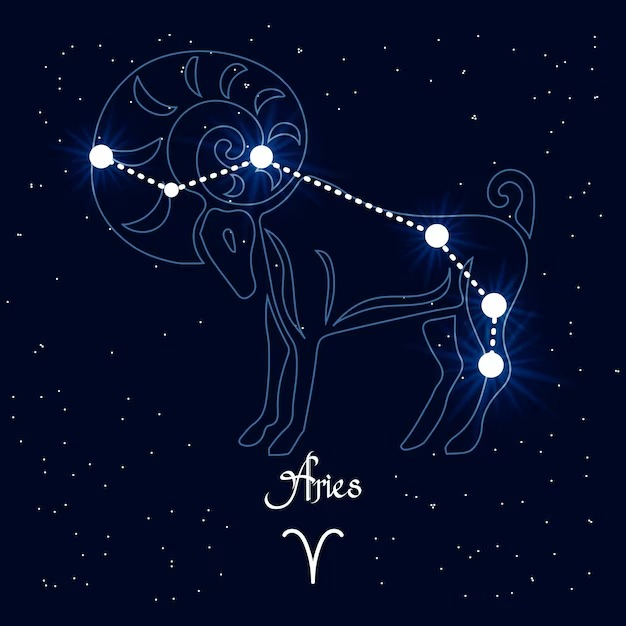
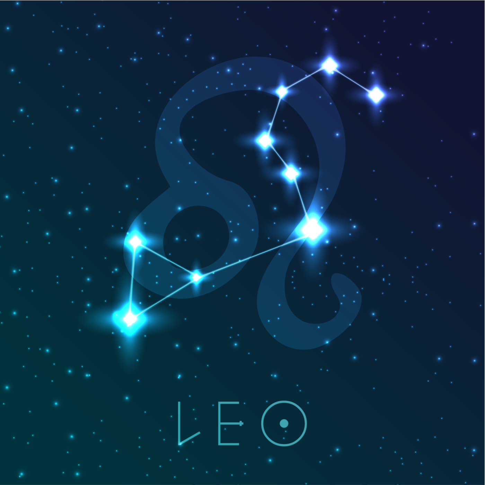
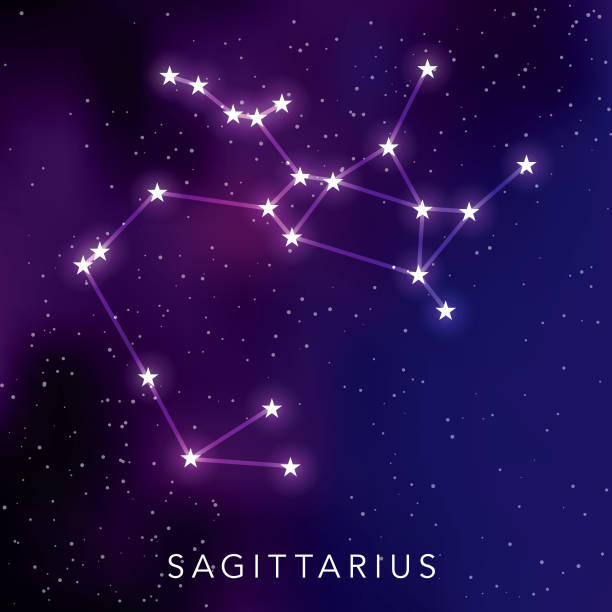
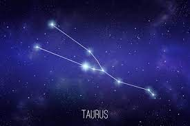
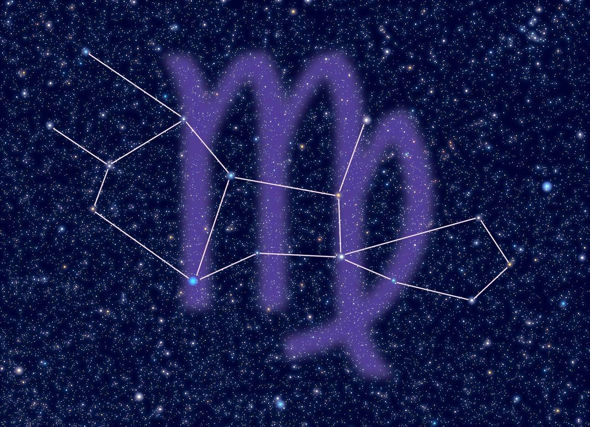
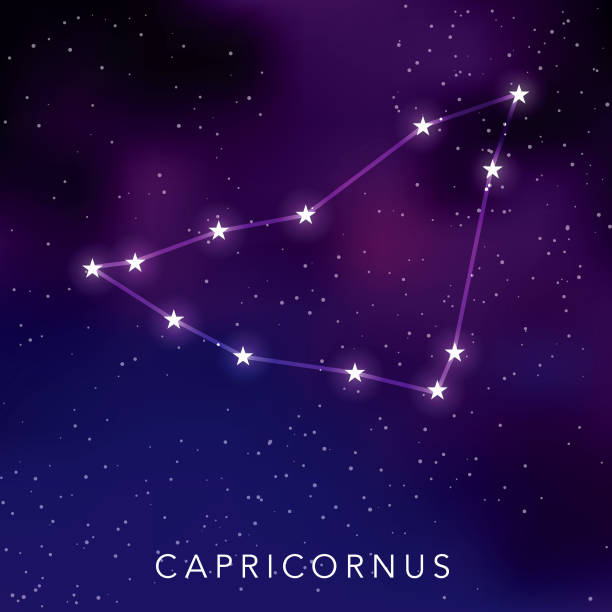
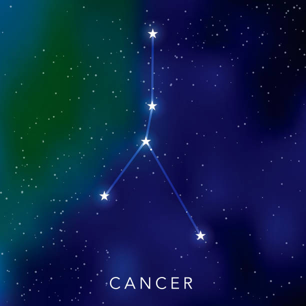
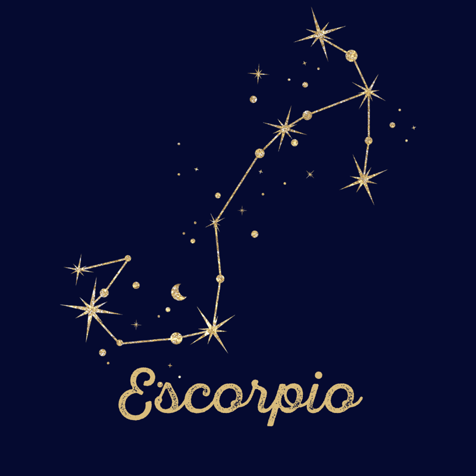
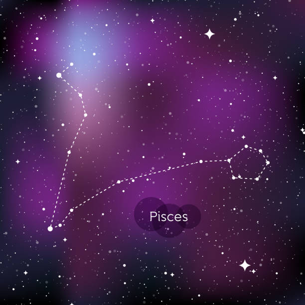

Como primer signo del zodiaco, Aries es pura energía, iniciativa y coraje. Son líderes natos, aventureros y llenos de entusiasmo. Su naturaleza impulsiva y directa los lleva a buscar siempre nuevos retos, aunque a veces pueden ser un poco impacientes y competitivos. Un Aries es la chispa que inicia el fuego.
Leo es el signo del zodiaco asociado con la creatividad, la generosidad y el carisma. Los Leo son líderes naturales, llenos de confianza y con un fuerte deseo de brillar en cualquier situación. Su presencia magnética y su corazón cálido los convierten en amigos leales y apasionados amantes. Siempre buscan ser el centro de atención y disfrutan de la admiración de los demás.
Sagitario es el signo del zodiaco que representa la aventura, la libertad y la expansión. Los Sagitario son personas optimistas, entusiastas y amantes de la exploración, tanto física como intelectual. Siempre están en busca de nuevas experiencias y conocimientos, y tienen un fuerte deseo de comprender el mundo que los rodea. Su espíritu libre y su sentido del humor los hacen compañeros de viaje ideales.
Tauro es el signo del zodiaco que simboliza la estabilidad, la paciencia y la sensualidad. Los Tauro son personas prácticas y confiables, que valoran la seguridad y el confort en su vida. Son conocidos por su determinación y su capacidad para trabajar arduamente para alcanzar sus metas. Además, tienen un fuerte aprecio por las cosas bellas y disfrutan de los placeres sensoriales.
Virgo es el signo del zodiaco asociado con la lógica, el análisis y la perfección. Los Virgo son personas detallistas y organizadas, que buscan siempre mejorar y optimizar todo a su alrededor. Son trabajadores incansables, con una mente crítica y un enfoque práctico hacia la vida. Aunque pueden ser reservados, su lealtad y dedicación hacia sus seres queridos es inquebrantable.
Capricornio es el signo del zodiaco que representa la ambición, la disciplina y la responsabilidad. Los Capricornio son personas determinadas y enfocadas en sus objetivos, dispuestas a trabajar duro para alcanzar el éxito. Son conocidos por su paciencia y su capacidad para planificar a largo plazo. Aunque pueden parecer reservados, tienen un fuerte sentido del deber hacia sus familias y amigos.
El protector y nutritivo del zodiaco. El cáncer es profundamente emocional, sensible e intuitivo. Valoran el hogar, la familia y la seguridad por encima de todo. Son leales, cariñosos y tienen una gran empatía. Su humor puede ser cambiante, como las fases de la Luna, y tiende a proteger su corazón sensible con una coraza exterior.
El intenso y apasionado del zodiaco. Escorpio es conocido por su profundidad emocional, misterio y magnetismo. Son personas valientes, decididas y con una gran capacidad de transformación. Su intuición es aguda, y no temen enfrentar los aspectos más oscuros de la vida. Aunque pueden ser reservados, son increíblemente leales y protectores con sus seres queridos.
El soñador y compasivo del zodiaco. Piscis es un signo profundamente intuitivo, sensible y empático. Son personas creativas, artísticas y con una gran conexión con el mundo espiritual. Su naturaleza amable y comprensiva los lleva a ayudar a los demás, a veces incluso a su propio detrimento. Los Piscis tienen una rica vida interior y una imaginación vívida que los inspira en todo lo que hacen.
